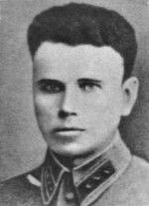

Сумченко Степан Сергеевич

Сумченко Степан Сергеевич - родился 18 марта 1906 года в селе Войновка Александрийского района Кировоградской области Украинской ССРВ 1939 году старший лейтенант, помощник начальника 11-го Себежского погранотряда пограничных войск НКВД Белорусского округа по разведке.С 12 декабря 1940 года и до начала Великой Отечественной войны работал начальником Слонимского городского отдела НКВД Барановичской области Белорус-ской ССР.В конце июля 1941 года был направлен с группой чеки-стов на оккупированную территорию Осиповичского района Могилёвской области Белорусской ССР для организации партизанского движения.С 1943 года исполнял обязанности командира этого же отряда и 1-й Осиповичской партизанской бригады, а затем заместитель командира Осиповичской военно-оперативной группы по разведке.Погиб в бою 8 января 1944 года, взорвав себя и окруживших его гитлеровцев гранатой.
На главную